الباب 03: إشارات المنع والقيود على السير والوقوف
الدليل المرجعي التفاعلي المعتمد والشامل لكافة إشارات المنع ذات الإطار الدائري الأحمر: التمييز القانوني الجوهري بين حظر العبور وممنوع الدخول، محاكيات حظر التجاوز وفخاخ الشاحنات والحافلات، الفروق الصارمة بين حظر الوقوف وحظر التوقف المطلق، وقيود الأبعاد والأوزان والكتل مع كافة العبارات والفخاخ الوزارية المعتمدة.
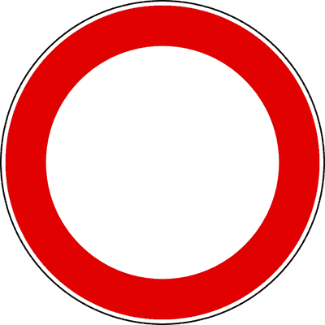

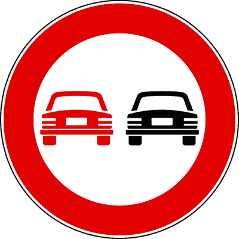
المقارنة البصرية الحاسمة: قيود الأبعاد والكتل والأوزان القصوى
الأرقام والمقاييس الدقيقة لإشارات قيود الحجم والوزن لتجنب الخلط في أسئلة الامتحان
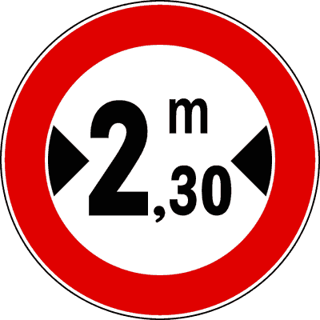
أقصى عرض مسموح
يمنع مرور المركبات التي يتجاوز عرضها الإجمالي مع الحمولة الرقم المذكور (سهمان أفقيان يشيران للداخل). يسري على كافة أنواع المركبات.
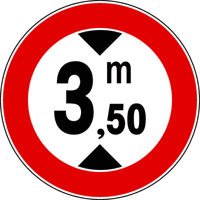
أقصى ارتفاع مسموح
يمنع مرور المركبات التي يتجاوز ارتفاعها الإجمالي الرقم المكتوب (سهمان رأسيان يشيران للداخل). يوضع قبل الجسور والأنفاق المنخفضة.
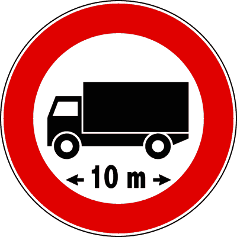
أقصى طول للمركبة
يمنع مرور المركبات أو قوافل المركبات والمقطورات التي يتجاوز طولها الكلي 10 أمتار. يسري أيضاً على الحافلات الطويلة.
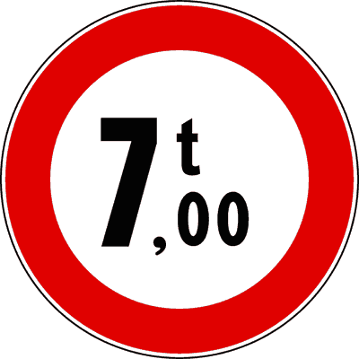
أقصى كتلة إجمالية فعلية
يمنع مرور المركبات التي يتجاوز وزنها الفعلي لحظة المرور الرقم المكتوب (7 طن)، وليس الوزن المكتوب في رخصة المركبة فقط.
حظر العبور في كلا الاتجاهين
Divieto di transito (Figura 54)دائرة بيضاء بإطار أحمر دون أي رمز بداخلها. توضع عند مداخل الطريق لتمنع حركة السير لجميع أنواع المركبات ذات المحرك وغير الآلية في كلا الاتجاهين.
- • يمنع سير جميع أنواع المركبات في كلا الاتجاهين (Nei due sensi).
- • يوضع على كلا مدخلي الطريق المعني بالحظر.
- • يسمح بمرور المشاة بحرية تامة دون أي قيود.
- • يسمح بمرور الدراجات الهوائية فقط إذا كانت تُدفع باليد (Condotta a mano).
- • يسمح بمرور الدراجات النارية والسيارات الكهربائية (خطأ، المنع يشمل كافة المركبات).
- • يمنع المشاة من العبور (خطأ، المشاة مستثنون تماماً).
- • يشير إلى شارع باتجاه واحد (خطأ، هذا Senso vietato Fig. 55).
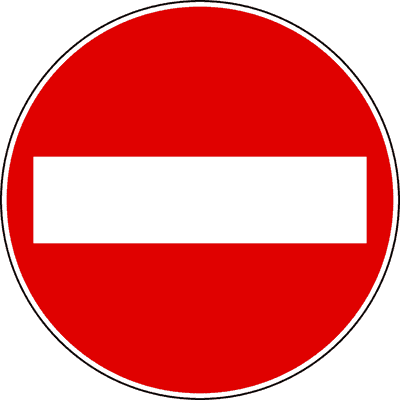
ممنوع الدخول (شارع باتجاه واحد)
Senso vietato (Figura 55)دائرة حمراء بشريط أبيض أفقي في المنتصف. تمنع الدخول إلى الشارع من هذا الطرف فقط لأنه مخصص للسير في الاتجاه المعاكس (شارع ذو اتجاه واحد Senso unico).
- • يمنع الدخول إلى طريق يمكن الدخول إليه من الطرف الآخر (Senso unico).
- • يمنع حركة السير لجميع أنواع المركبات القادمة من جهة الإشارة.
- • يسمح بخروج المركبات القادمة من الاتجاه المقابل.
- • يسمح بمرور وسير المشاة.
- • يمنع السير في الاتجاهين (خطأ، هذا Divieto di transito Fig. 54).
- • يسمح بالدخول للدراجات النارية والتاكسي (خطأ، المنع عام للدخول من هذا الجانب).
- • يلزم السائق بالدوران للخلف فوراً (خطأ، لا يفرض مناورة محددة بل يمنع التقدم في هذا الشارع).
حظر التجاوز لجميع المركبات ذات المحرك
Divieto di sorpasso (Figura 56)دائرة بإطار أحمر وسيارة سوداء يميناً وأخرى حمراء يساراً. تمنع جميع المركبات ذات المحرك من تجاوز أي مركبة أخرى ذات محرك (أكثر من عجلتين).
- • يمنع تجاوز المركبات ذات المحرك، ما لم تكن دراجات نارية ثنائية العجلات دون سلة جانبية.
- • يسمح بتجاوز المركبات غير الآلية (دراجات هوائية، عربات حيوانية، عربات يد).
- • يسمح بتجاوز دراجة نارية ذات عجلتين (Motociclo) بشرط عدم عبور الخط الأبيض المتصل والبقاء داخل نفس المسار.
- • يسمح للدراجة النارية بتجاوز سيارة (خطأ، الدراجة ذات محرك وممنوعة من تجاوز السيارات).
- • يمنع تجاوز الدراجات الهوائية (خطأ، يجوز تجاوزها دون تخطي الخط المتصل).
- • يمنع التجاوز فقط للشاحنات (خطأ، هذا Fig. 60).
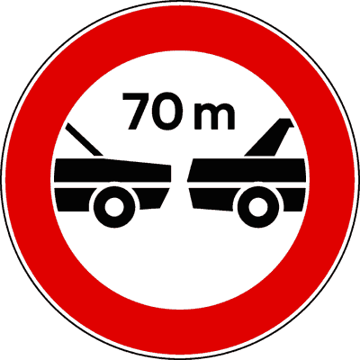
المسافة الدنيا الإجبارية بين المركبات (70 متراً)
Distanziamento minimo obbligatorio di 70 m (Figura 57)دائرة بيضاء بإطار أحمر وسيارتا ركاب تفصل بينهما مسافة 70 متراً. تلزم السائق بترك مسافة أمان لا تقل عن الرقم المكتوب عن المركبة التي تسبقه أثناء السير.
- • يلزم بترك مسافة أمان لا تقل عن 70 متراً عن المركبة التي تسير في الأمام.
- • يسري على جميع المركبات ذات المحرك السائرة على نفس المسار.
- • يطبق حتى عند السير بسرعة بطيئة.
- • يشير إلى مسافة التوقف الكامل (خطأ، هي مسافة بين مركبتين أثناء السير).
- • يلزم السير بسرعة 70 كم/س (خطأ، هذا حد سرعة وليس مسافة أمان).
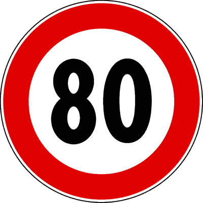
الحد الأقصى للسرعة (80 كم/س)
Limite massimo di velocità 80 km/h (Figura 58)دائرة بيضاء بإطار أحمر ورقم بالداخل. يحدد السرعة القصوى بالكيلومتر في الساعة التي يحظر على جميع المركبات تجاوزها على هذا الطريق.
- • يمنع السير بسرعة تزيد عن 80 كم/ساعة.
- • يسري فوراً من موضع الإشارة وحتى التقاطع القادم أو ظهور إشارة إلغاء (Fig. 81).
- • يلزم جميع فئات المركبات بالتقيد بهذا الحد الأقصى.
- • يحدد الحد الأدنى الإجباري للسرعة (خطأ، الحد الأدنى دائري أزرق Fig. 105).
- • ينصح بالسرعة فقط ولا يلزم بها (خطأ، إشارة منع وإلزام قانوني صريح).
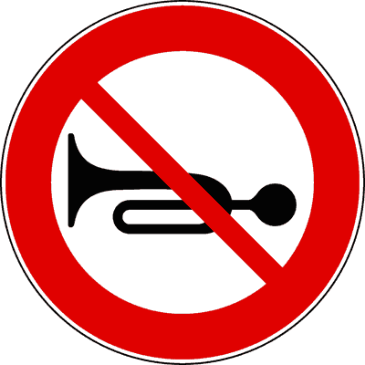
منع استخدام آلة التنبيه الصوتية (الكلاكس)
Divieto di segnalazioni acustiche (Figura 59)دائرة بيضاء بإطار أحمر وبوق مشطوب بخط أحمر مائل. تمنع استخدام آلة التنبيه (Il clacson) إلا في حالات الضرورة القصوى لتفادي خطر وشيك وحادث محقق.
- • يمنع استخدام آلات التنبيه الصوتية إلا في حالة وجود خطر داهم مباشر (Pericolo immediato).
- • يسمح باستخدامه عند نقل جريح أو مريض في حالة صحية حرجة وخطيرة.
- • يوضع عادة بالقرب من المستشفيات ودور الرعاية والمناطق السكنية الهادئة.
- • يمنع استخدام الكلاكس حتى في حالات الخطر المباشر (خطأ، الخطر المباشر يستثنى دائماً).
- • يسمح باستخدامه لتحية الأصدقاء أو حث السائق المتكاسل أمامك (خطأ تماماً).
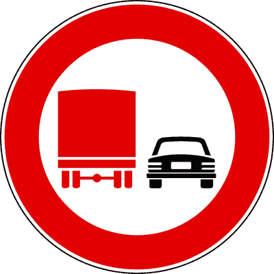
حظر التجاوز للشاحنات الثقيلة (فوق 3.5 طن)
Divieto di sorpasso per autocarri merci oltre 3,5 t (Figura 60)دائرة بإطار أحمر، يظهر فيها شاحنة بضائع حمراء يساراً وسيارة سوداء يميناً. تحظر التجاوز حصراً على مركبات نقل البضائع التي تزيد كتلتها القصوى المحملة عن 3.5 طن.
- • يمنع شاحنات البضائع (Veicoli merci) التي تتجاوز 3.5 طن من تجاوز المركبات ذات المحرك.
- • لا يشمل الحافلات (Autobus) حتى لو زادت كتلتها عن 3.5 طن لأنها مخصصة لنقل الأشخاص.
- • لا يشمل عربات السكن والكرفان (Autocaravan) لنفس السبب السابق.
- • يسمح لسيارات الركاب والشاحنات الصغيرة حتى 3.5 طن بإجراء التجاوز بشكل طبيعي.
- • يمنع الحافلات التي يزيد وزنها عن 3.5 طن من التجاوز (فخ وزاري شهير ➔ FALSO).
- • يمنع جميع السيارات من تجاوز الشاحنة (خطأ، يمنع الشاحنة من تجاوز غيرها).
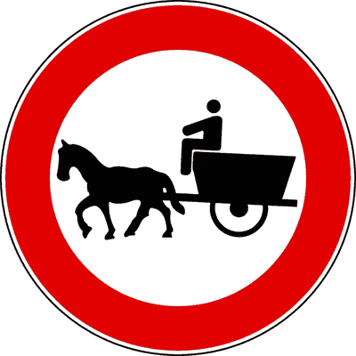
منع مرور مركبات الجر الحيواني
Divieto di transito ai veicoli a trazione animale (Figura 61)دائرة بيضاء بإطار أحمر ورسم حصان يجر عربة. تمنع عبور كافة العربات التي تجرها حيوانات (خيول، حمير، بغال).
- • يمنع مرور جميع المركبات التي تجرها الحيوانات.
- • يسمح بمرور كافة المركبات الآلية والسيارات والدراجات الهوائية.
- • يمنع ركوب الخيل بمفرده دون عربة (خطأ، يمنع العربة المجرورة بحيوان).
- • يمنع الجرارات الزراعية (خطأ، للجرارات إشارة خاصة Fig. 71).

منع عبور وسير المشاة
Divieto di transito ai pedoni (Figura 62)دائرة بيضاء بإطار أحمر ورسم رجل يمشي باللون الأسود. تمنع حركة وسير المشاة على هذا الطريق أو المسار لخطورته عليهم.
- • يمنع المشاة من السير واستخدام الطريق.
- • يوضع في الأنفاق أو الطرق السريعة غير المجهزة بأرصفة مشاة.
- • يسمح بمرور جميع أنواع المركبات المصرح لها قانوناً.
- • يشير إلى ممر مشاة إجباري (خطأ، الإجباري دائرة زرقاء Fig. 108).
- • يشير إلى خطر عبور مشاة (خطأ، إشارة الخطر مثلثة Fig. 26).

منع مرور الدراجات الهوائية (Velocipedi)
Divieto di transito ai velocipedi (Figura 63)دائرة بيضاء بإطار أحمر ورسم دراجة هوائية. تمنع مرور الدراجات الهوائية والتروسيكلات الهوائية ودراجات التانديم.
- • يمنع ركوب وسير الدراجات الهوائية بجميع أنواعها (Velocipedi).
- • يسمح بمرور المشاة والدراجات النارية والسيارات.
- • يسمح بمرور الدراجة إذا نزل قائدها ودفعها بيده (Condotta a mano).
- • يمنع الدراجات ذات المحرك الصغير (Ciclomotori) (خطأ، يمنع الدراجات الهوائية العادية).
- • يشير إلى مسار إلزامي للدراجات (خطأ، الإلزامي دائرة زرقاء Fig. 110).

منع مرور الدراجات النارية (Motocicli)
Divieto di transito ai motocicli (Figura 64)دائرة بيضاء بإطار أحمر ورسم دراجة نارية وسائقها. تمنع مرور الدراجات النارية بجميع أحجام محركاتها (Motocicli)، سواء كانت بسلة جانبية (Sidecar) أو بدونها.
- • يمنع مرور جميع الدراجات النارية (Motocicli di ogni cilindrata).
- • يسمح بمرور السيكلوموتوري ذي المحرك الصغير (Ciclomotori a 2 ruote).
- • يسمح بمرور سيارات الركاب والشاحنات والحافلات.
- • يمنع السيكلوموتوري (Ciclomotori) (خطأ شهير في الامتحان، Ciclomotori مسموح لهم).
- • يمنع السيارات ذات الأربع عجلات (خطأ).
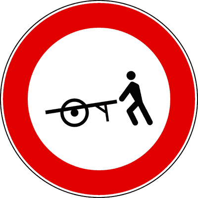
منع مرور العربات اليدوية (Veicoli a braccia)
Divieto di transito ai veicoli a braccia (Figura 65)دائرة بيضاء بإطار أحمر ورسم رجل يدفع عربة يدوية. تمنع حركة كافة العربات التي تجر أو تدفع باليد على هذا الطريق.
- • يمنع مرور العربات المدفوعة أو المجرورة بالأذرع البشرية.
- • يسمح بسير المشاة العاديين وعربات الأطفال وعربات ذوي الاحتياجات الخاصة.
- • يمنع مرور عربات الأطفال (خطأ، عربات الأطفال ليست veicoli a braccia بالمعنى القانوني للمرور).
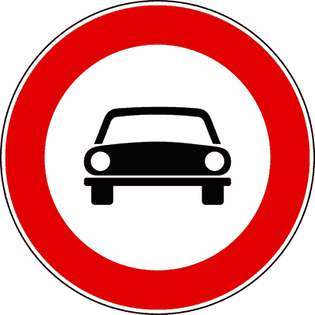
منع مرور جميع السيارات والمركبات الآلية
Divieto di transito a tutti gli autoveicoli (Figura 66)دائرة بيضاء بإطار أحمر ورسم مقدمة سيارة ركاب. تمنع مرور جميع المركبات الآلية ذات 3 عجلات فأكثر (Autoveicoli, Motoveicoli a 3 e 4 ruote).
- • يمنع مرور جميع المركبات الآلية (سيارات، شاحنات، حافلات، دراجات ثلاثية ورباعية Quadricicli).
- • يسمح بمرور المركبات ذات العجلتين فقط (دراجات هوائية، سيكلوموتوري، دراجات نارية ثنائية العجلات).
- • يمنع الدراجات النارية ثنائية العجلات (خطأ، يسمح بها صراحة).
- • يمنع سيارات الركاب فقط ويسمح بالشاحنات (خطأ، يمنع كل ذي 3 عجلات فأكثر).
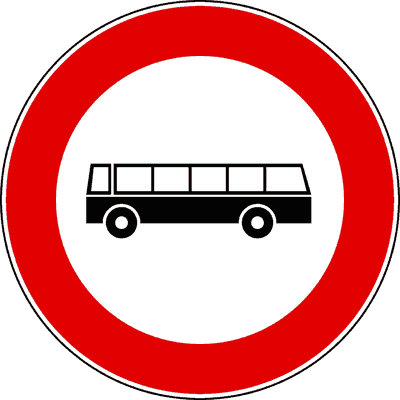
منع عبور الحافلات (Autobus)
Divieto di transito agli autobus (Figura 67)دائرة بيضاء بإطار أحمر ورسم جانبي لحافلة ركاب. تمنع مرور جميع الحافلات السياحية والنقل العام والمدرسية، أياً كان وزنها.
- • يمنع مرور جميع الحافلات المصممة لنقل أكثر من 9 ركاب (Autobus).
- • يسمح بمرور الشاحنات وسيارات الركاب وعربات الكرفان (Autocaravan).
- • يمنع عربات السكن الكرفان (خطأ، الكرفان ليس حافلة).
- • يسمح للحافلات المدرسية (Scuolabus) بالمرور (خطأ، المنع يشمل كافة الحافلات إلا بلوحة استثناء).
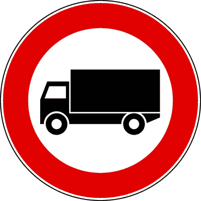
منع مرور شاحنات البضائع فوق 3.5 طن
Divieto di transito agli autocarri oltre 3,5 t (Figura 68)دائرة بيضاء بإطار أحمر ورسم شاحنة بضائع. تمنع مرور مركبات نقل البضائع التي تتجاوز كتلتها الإجمالية القصوى المصرح بها 3.5 طن.
- • يمنع مركبات نقل البضائع (Veicoli trasporto merci) التي يتجاوز وزنها المرخص 3.5 طن.
- • يعتمد على الوزن الأقصى المصرح به في وثيقة تسجيل المركبة (Carta di circolazione).
- • يسمح بمرور الحافلات وعربات الكرفان حتى لو تجاوز وزنها 3.5 طن.
- • يسمح بمرور الشاحنات التي لا يتجاوز وزنها المصرح به 3.5 طن حتى لو كانت محملة بالكامل.
- • يمنع الحافلات السياحية التي يزيد وزنها عن 3.5 طن (فخ شهير ➔ خطأ FALSO).
- • يقيس الوزن الفعلي على الميزان (خطأ، يقيس الوزن الأقصى المدون بالرخصة).
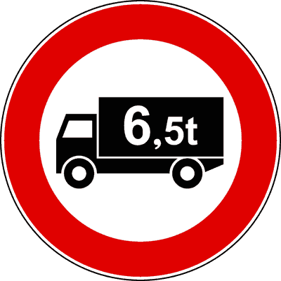
منع شاحنات البضائع بوزن محدد (مثال: فوق 6.5 طن)
Divieto di transito a veicoli merci oltre 6,5 t (Figura 69)دائرة بيضاء بإطار أحمر ورسم شاحنة وبداخلها رقم بالأطنان (مثلاً 6,5 t). تعديل للحد الافتراضي 3.5 طن إلى الرقم المكتوب صراحة.
- • يمنع شاحنات نقل البضائع التي تتجاوز كتلتها المرخصة الرقم المكتوب (6.5 طن).
- • يسمح بمرور شاحنات البضائع التي وزنها المرخص 6.5 طن أو أقل.
- • يمنع الحافلات التي يزيد وزنها عن 6.5 طن (خطأ، الحافلات لنقل الأشخاص).
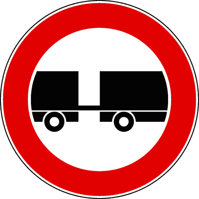
منع مرور المركبات التي تسحب مقطورة
Divieto di transito ai veicoli che trainano un rimorchio (Figura 70)دائرة بيضاء بإطار أحمر ورسم سيارة تسحب مقطورة. تمنع جميع المركبات التي تقطر مقطورة يزيد وزنها عن 750 كجم (Rimorchio non leggero)، ما لم تحدد لوحة تكميلية خلاف ذلك.
- • يمنع الشاحنات ذات المقطورات (Autotreni) والقاطرات المفصلية (Autoarticolati).
- • يسمح بسحب المقطورات الخفيفة (Rimorchi leggeri fino a 750 kg) ما لم تكن هناك لوحة تمنعها.
- • يسمح بسحب عربات السكن والمخيمات الصغيرة الخفيفة وفق الشروط.
- • يمنع سحب سيارة معطلة وفقاً للمادة 165 (خطأ، السحب الاضطراري للطوارئ مسموح).
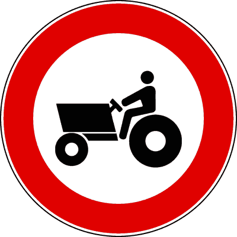
منع مرور الآلات والجرارات الزراعية
Divieto di transito alle macchine agricole (Figura 71)دائرة بيضاء بإطار أحمر ورسم جرار زراعي. تمنع مرور جميع الآلات الزراعية ذاتية الحركة والمجرورة، ذات العجلات المطاطية أو الجنزيرية.
- • يمنع مرور كافة الآلات الزراعية (Semoventi e trainate).
- • يسري على الآلات الزراعية ذات العجلات (Gommate) وذات الجنزير (Cingolate).
- • يسمح بمرور آلات الأشغال العامة والبناء (Macchine operatrici).
- • يمنع آلات رصف الطرق والبناء (خطأ، هذه Macchine operatrici وليست agricole).
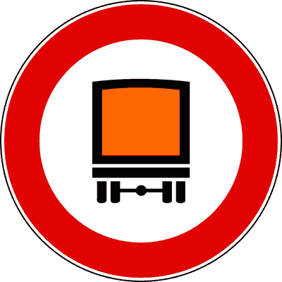
منع مركبات نقل البضائع الخطرة
Divieto di transito ai veicoli con merci pericolose (Figura 72)دائرة بيضاء بإطار أحمر وصندوق شاحنة بلون برتقالي مائل. تمنع مرور المركبات التي تنقل بضائع ومواد مصنفة قانوناً كبضائع خطرة (Merci pericolose).
- • يمنع مرور المركبات التي تنقل مواد سامة، مسببة للتآكل، أو مشعة.
- • يوضع قبل الأنفاق والمناطق المأهولة لحماية الأرواح والبيئة.
- • لا ينطبق على وقود المركبة الموجود في خزانها العادي لتشغيل محركها.
- • يمنع السيارات التي تعمل بوقود الغاز الطبيعي أو الميثان (خطأ، الوقود الداخلي للمحرك مستثنى).
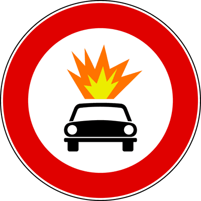
منع مركبات نقل المتفجرات والمواد سريعة الاشتعال
Divieto di transito per merci esplosive o infiammabili (Figura 73)دائرة بيضاء بإطار أحمر ورسم انفجار داخل دائرة برتقالية. تمنع حصراً المركبات المحملة بمواد متفجرة أو سهلة الاشتعال والانفجار.
- • يمنع مرور شاحنات نقل الألعاب النارية، الديناميت، والغازات القابلة للانفجار.
- • يوضع قبل الأنفاق ومراكز المدن ذات الكثافة العالية.
- • يمنع مركبات التزود بوقود البنزين العادية (خطأ).
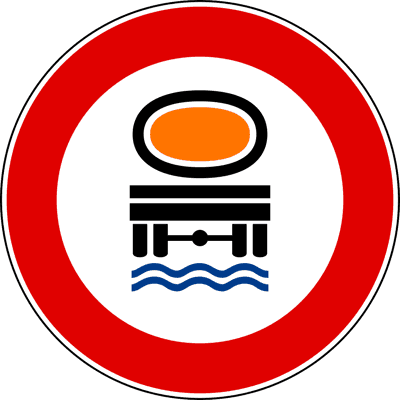
منع المركبات التي تنقل مواد ملوثة للمياه
Divieto per prodotti contaminanti dell'acqua (Figura 74)دائرة بيضاء بإطار أحمر ورسم صهريج تتساقط منه قطرات فوق أمواج مائية. تمنع مرور المركبات التي تنقل سوائل ومواد من شأنها تلويث المياه السطحية والجوفية.
- • يمنع صهاريج نقل المواد الكيماوية والنفطية القابلة لتلويث المياه.
- • يوضع بالقرب من البحيرات، الأنهار، الخزانات المائية والمحميات الطبيعية.
- • يسمح بمرور صهاريج نقل مياه الشرب النقية أو الحليب.
- • يمنع صهاريج مياه الري أو نقل الحليب (خطأ، الماء النقي والحليب لا يلوثان المياه).
منع المركبات التي يتجاوز عرضها 2.30 متراً
Divieto per larghezza superiore a 2,30 m (Figura 75)دائرة بيضاء بإطار أحمر، يظهر فيها سهمان أفقيان يشيران للداخل وبينهما رقم (مثلاً 2,30 m). تمنع مرور أي مركبة يتجاوز عرضها الإجمالي مع حمولتها هذا الرقم.
- • يقيس العرض الأقصى للمركبة متضمناً الحمولة والمرايا الجانبية البارزة.
- • يسري على جميع المركبات بدون استثناء (سيارات، شاحنات، حافلات).
- • يوضع قبل الطرق الضيقة والأزقة التاريخية والجسور الضيقة.
- • يحدد الارتفاع (خطأ، الأسهم أفقية تعني العرض Larghezza).
- • يسمح بمرور مركبة عرضها 2.30 متراً تماماً (صحيح، لأن المنع لمن يزيد عن الرقم Superiore a).
منع المركبات التي يتجاوز ارتفاعها 3.50 متراً
Divieto per altezza superiore a 3,50 m (Figura 76)دائرة بيضاء بإطار أحمر مع سهمين رأسيين (أعلى وأسفل) ورقم بالمتر (مثلاً 3,50 m). تمنع مرور المركبات التي يتجاوز ارتفاعها الكلي مع الحمولة الرقم المحدد.
- • يقيس الارتفاع الكلي من سطح الأرض حتى أعلى نقطة في المركبة أو حمولتها.
- • يوضع قبل الأنفاق والجسور السفلية والأسلاك الكهربائية المنخفضة.
- • يسري على كافة المركبات دون استثناء.
- • يمنع مركبة بارتفاع 3.50 م بالضبط (خطأ، المنع لمن يتجاوز Superiore a).
منع المركبات التي يتجاوز طولها 10 أمتار
Divieto per lunghezza superiore a 10 m (Figura 77)دائرة بيضاء بإطار أحمر ورسم شاحنة مع سهمين أفقيين ورقم (مثلاً 10 m). تمنع مرور المركبات الفردية أو المجموعات المفصلية التي يتجاوز طولها الكلي 10 أمتار.
- • يسري على الشاحنات، الحافلات، وقوافل المركبات ذات المقطورات (Autotreni).
- • يوضع عند مداخل المنعطفات الجبلية الحادة والشوارع الضيقة التي يصعب فيها الدوران.
- • لا ينطبق على الحافلات السياحية (خطأ، ينطبق على الحافلة إذا زاد طولها عن 10 أمتار).
- • يشير لمسافة الأمان بين سيارتين (خطأ، هذا Fig. 57).
منع المركبات بوزن إجمالي فعلي يتجاوز 7 أطنان
Divieto per massa superiore a 7 t (Figura 78)دائرة بيضاء بإطار أحمر ورقم طن (مثلاً 7 t). تمنع مرور أي مركبة يتجاوز وزنها الفعلي اللحظي وقت المرور الرقم المحدد على اللوحة.
- • يقيس الوزن الإجمالي الفعلي للمركبة مع حمولتها لحظة العبور (Massa effettiva).
- • يوضع قبل الجسور والأرضيات الضعيفة المعرضة للانهيار.
- • يسمح بمرور شاحنة رخصتها 10 طن إذا كانت تسير فارغة ووزنها الفعلي اللحظي 6 طن فقط.
- • يقيس الوزن الأقصى المكتوب في رخصة السيارة (خطأ، يقيس الوزن الفعلي على الميزان).
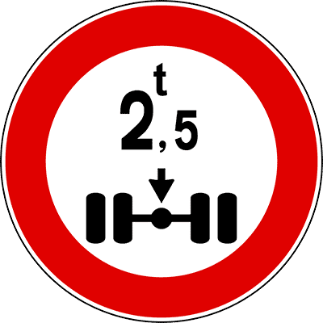
منع المركبات بحمولة محور تتجاوز 2.5 طن
Divieto per massa per asse superiore a 2,5 t (Figura 79)دائرة بيضاء بإطار أحمر ورسم محور عجلات ورقم (مثلاً 2,5 t). تمنع مرور المركبات التي تتجاوز حمولة أي محور من محاورها الرقم المحدد.
- • يقيس الحمولة الواقعة على المحور الأكثر وزناً بالمركبة (Massa gravante sull'asse).
- • يوضع لحماية الجسور ذات العوارض الحساسة وأنابيب المرافق تحت الإسفلت.
- • يقيس الوزن الإجمالي لكافة محاور المركبة معاً (خطأ، يقيس كل محور بمفرده Asse singolo).
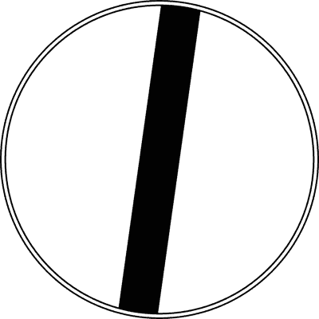
نهاية كافة أشكال المنع والقيود السابقة (طريق سالك)
Via libera / Fine di tutte le prescrizioni (Figura 80)دائرة رمادية بيضاء يشطبها شريط أسود مائل. تعلن انتهاء كافة القيود والمنوعات المحددة سابقاً على هذا الطريق، واستعادة القواعد العامة للسير.
- • ينهي كافة قيود المنع المحددة سابقاً (السرعة، التجاوز، المسافة).
- • تعود بعده السرعة القصوى إلى الحدود العامة القانونية للطريق (مثلاً 90 كم/س خارج المدن).
- • ينهي إشارات الخطر أو الأسبقية (خطأ، ينهي قيود إشارات المنع Segnali di divieto فقط).
- • يسمح بالسير بأي سرعة دون حدود قانونية (خطأ، تعود الحدود العامة للطريق).
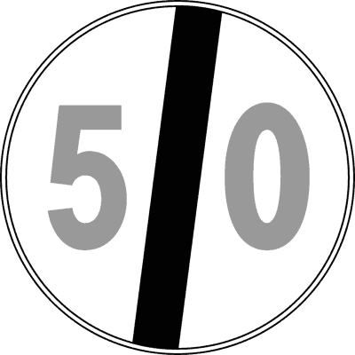
نهاية حد السرعة القصوى السابق
Fine del limite massimo di velocità (Figura 81)دائرة رمادية بيضاء ورقم بالأسود يشطبه شريط أسود مائل. تنهي حد السرعة المفروض سابقاً وتعيد تطبيق الحد العام القانوني لنوع الطريق.
- • يعلن انتهاء سريان حد السرعة المشار إليه سابقاً.
- • تعود السرعة إلى الحد العام المطبق على تلك الفئة من الطرق.
- • يلزم السائق بالسير بسرعة 80 كم/س (خطأ، ينهي الحد وليس يفرضه).
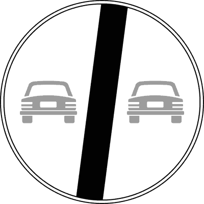
نهاية حظر التجاوز لجميع المركبات
Fine del divieto di sorpasso (Figura 82)دائرة رمادية بيضاء بها سيارتان رماديتان يشطبهما شريط أسود مائل. تنهي حظر التجاوز العام المفروض بإشارة Fig. 56 وتسمح بالمناورة وفق ضوابط الأمان.
- • يسمح مجدداً بمناورة التجاوز مع مراعاة قواعد السلامة والخطوط الأرضية.
- • يظل التجاوز خاضعاً لحالة الخط الأرضي (لا يجوز تخطي الخط المتصل Striscia continua).
- • يسمح بالتجاوز حتى مع وجود خط متصل (خطأ جسيم، الخط المتصل يحظر التخطي دائماً).

نهاية حظر التجاوز للشاحنات الثقيلة فوق 3.5 طن
Fine divieto sorpasso autocarri oltre 3,5 t (Figura 83)دائرة رمادية بيضاء برسم شاحنة وسيارة رماديتين يشطبهما خط أسود. تنهي حظر التجاوز المفروض على شاحنات البضائع فوق 3.5 طن (Fig. 60).
- • يسمح للشاحنات الثقيلة فوق 3.5 طن بالتجاوز وفق القواعد العامة.
- • يسري حصراً على إنهاء الحظر الخاص بمركبات نقل البضائع.
- • ينهي حظر التجاوز لسيارات الركاب (خطأ، سيارات الركاب لم تكن محظورة بهذه الإشارة أصلاً).
حظر الوقوف (الركن)
Divieto di sosta (Figura 84)دائرة زرقاء بإطار أحمر وخط أحمر مائل واحد. تمنع الوقوف المطول للسيارة وتركها بدون سائق (Sosta). تسمح صراحة بالتوقف المؤقت القصير لإنزال الركاب (Fermata).
- • يمنع الوقوف التام للسيارة بدون سائق (Sosta).
- • يسمح بالتوقف القصير (Fermata) لصعود أو نزول الركاب مع بقاء السائق على استعداد للمغادرة.
- • يسري داخل المدن (Centri abitati) من الساعة 8:00 إلى 20:00 كقاعدة عامة ما لم توجد لوحة خلاف ذلك.
- • يسري خارج المدن (Strade extraurbane) على مدار 24 ساعة يومياً.
- • يمنع أيضاً التوقف لإنزال راكب (Fermata) (فخ شهير ➔ FALSO؛ التوقف مسموح).
- • يسري داخل المدن على مدار 24 ساعة دون لوحة (خطأ، بالمدن من 8 إلى 20 فقط).
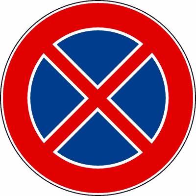
حظر التوقف المطلق
Divieto di fermata (Figura 85)دائرة زرقاء بإطار أحمر وشريطين أحمرين متقاطعين على شكل حرف X. تمنع منعاً باتاً أي توقف للمركبة ولو لثانية واحدة (سواء Sosta أو Fermata).
- • يمنع كلاً من الوقوف (Sosta) والتوقف المؤقت (Fermata) منعاً باتاً.
- • يسري على مدار 24 ساعة يومياً طوال أيام الأسبوع، داخل المدن وخارجها.
- • يمنع التوقف حتى لإنزال راكب أو لشراء شيء سريع.
- • استثناء الطوارئ: مركبات الإسعاف والشرطة والإطفاء أثناء أداء مهام الطوارئ فقط.
- • يسمح بالتوقف لدقيقة واحدة لإنزال راكب (خطأ جسيم، ممنوع تماماً).
- • يسري داخل المدن من 8 إلى 20 فقط (خطأ، يسري 24 ساعة في كل مكان).
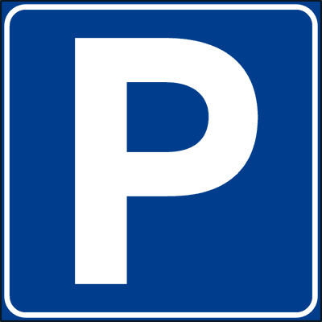
موقف سيارات مصرح به (باركينج)
Parcheggio (Figura 86)مربع أزرق بحرف P أبيض كبير. يشير إلى منطقة مخصصة ومصرح فيها بوقوف وركن السيارات وفق الشروط واللوحات الملحقة.
- • يشير إلى ساحة أو منطقة مجهزة لوقوف المركبات.
- • يمكن أن يقترن بلوحات تكميلية توضح ساعات الوقوف، أو الرسوم، أو فئات المركبات المسموح لها.
- • يلزم السائق بركن سيارته (خطأ، إشارة إرشادية وتسهيلية وليست إشارة إلزام دائرية).
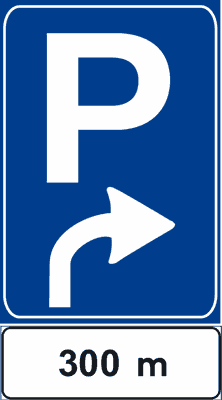
إشعار مسبق بموقف سيارات
Preavviso di area di parcheggio (Figura 89)لوحة زرقاء بحرف P وسهم يحدد الاتجاه والمسافة المتبقية للوصول إلى ساحة الوقوف المتاحة.
- • يشعر السائق بوجود موقف سيارات على مسافة معينة بالاتجاه المشار إليه.
- • يساعد السائق على التموضع المبكر في المسار الصحيح للوصول للموقف.
- • يوضع في نقطة الموقف مباشرة (خطأ، هو إشعار مسبق Preavviso).
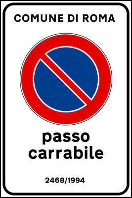
مدخل عقار خاص (Passo carrabile)
Passo carrabile (Figura 90)لوحة رسمية مستطيلة تحمل شعار البلدية ورقم الترخيص وعبارة Passo Carrabile مع علامة حظر الوقوف. تمنع وقوف السيارات أمام مدخل العقار أو الجراج الخاص.
- • يمنع الوقوف (Sosta) أمام المدخل لإتاحة دخول وخروج مركبات العقار.
- • يسمح بالتوقف العابر القصير (Fermata) بشرط عدم إعاقة المدخل وبقاء السائق بالسيارة.
- • لتكون اللوحة قانونية، يجب أن تحمل اسم البلدية الصادرة عنها ورقم وتاريخ الترخيص الرسمي.
- • يمنع التوقف القصير لإنزال راكب (خطأ، Fermata مسموحة).
- • يسمح لصاحب الجراج نفسه بركن سيارته أمام المدخل في الشارع العام (خطأ، المنع يسري على الجميع في الطريق العام).
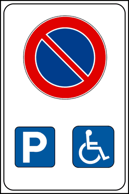
وقوف مخصص لذوي الاحتياجات الخاصة
Sosta consentita alle persone invalide (Figura 91)لوحة حظر الوقوف مقترنة برسم كرسي متحرك لذوي الاحتياجات الخاصة. تحظر الوقوف على كافة المركبات وتخصصه حصراً لحاملي التصريح الرسمي (Contrassegno invalidi).
- • يمنع الوقوف لجميع المركبات غير المصرح لها.
- • يخصص المكان حصراً للمركبات التي تخدم ذوي الإعاقة الحاملين للتصريح القانوني المعروض بوضوح.
- • يسري المنع على مدار 24 ساعة دون انقطاع.
- • يسمح بالوقوف المؤقت لشراء دواء من صيدلية (خطأ جسيم، ممنوع تماماً ويعاقب عليه بغرامة ونقاط).
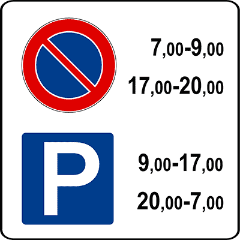
تنظيم الوقوف بواسطة قرص التوقيت (Disco orario)
Regolazione della sosta con disco orario (Figura 92)لوحة حظر وقوف ملحقة برسم قرص توقيت وسقف زمني (مثلاً 60 دقيقة). تسمح بالوقوف المجاني لفترة محددة بشرط عرض قرص توقيت بدء الوقوف على الزجاج الأمامي.
- • يلزم السائق بوضع وعرض قرص التوقيت (Disco orario) مشيراً إلى ساعة الوصول بدقة.
- • يحدد الحد الأقصى للمدة المسموح بركن السيارة فيها بالمجان.
- • يسمح بتغيير مؤشر القرص دون تحريك السيارة لتمديد الوقت (خطأ ومخالفة قانونية صريحة).
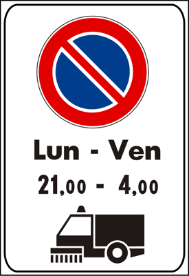
حظر الوقوف المؤقت لأعمال تنظيف الشارع
Divieto di sosta per pulizia della strada (Figura 148)لوحة حظر الوقوف ملحقة برسم شاحنة مكانس التنظيف وساعات وأيام محددة. تحظر الوقوف في تلك الأوقات حصراً لإتاحة تنظيف الشارع بالآلات، وتؤدي لمصادرة وسحب السيارة المخالفة.
- • يمنع الوقوف في الأيام والساعات المحددة باللوحة لتنظيف وتطهير الشارع.
- • السيارة المخالفة يتم سحبها بالونش (Rimozione forzata) على نفقة مالكها.
- • في غير الأوقات المحددة باللوحة، يكون الوقوف مسموحاً بشكل طبيعي.
- • يسري المنع طوال أيام الأسبوع 24 ساعة (خطأ، يسري فقط في المواعيد المحددة باللوحة).
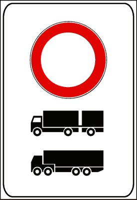
منع الشاحنات ذات المقطورات المزدوجة والمفصلية
Divieto ad autotreni e autoarticolati (Figura 151)لوحة حظر تمنع عبور الشاحنات الطويلة ذات المقطورة المزدوجة (Autotreni) والقاطرات النصف نقل المفصلية الكبيرة (Autoarticolati).
- • يمنع مرور الشاحنات الكبيرة المزدوجة والمفصلية على الطرق الضيقة.
- • يسمح بمرور الشاحنات العادية المفردة دون مقطورة (Autocarri isolati).
- • يمنع الشاحنات الفردية المنعزلة (خطأ، يمنع الشاحنات ذات المقطورات فقط).
الفخ: إشارة حظر العبور (Fig. 54) تمنع جميع المركبات فقط، والمشاة مسموح لهم بالسير والعبور بحرية كاملة دون أي قيد.
الفخ: الإشارة تمنع الدخول من جهتك فقط لوجود طريق ذي اتجاه واحد، والمركبات القادمة من الطرف الآخر مسموح لها بالسير والخروج.
الفخ: يجوز للسيارة تجاوز دراجة نارية ذات عجلتين بشرطين: البقاء داخل نفس المسار وعدم لمس أو تخطي الخط المتصل.
الفخ: الاستثناء ينطبق على تجاوز الدراجة، لكن الدراجة ذاتها مركبة ذات محرك ومحظور عليها تجاوز السيارات تماماً.
الفخ: الحافلات (Autobus) تنقل ركاباً وليست مركبات بضائع (Veicoli merci)، وبالتالي لا يشملها المنع مهما زاد وزنها.
الفخ: الإشارة تمنع الدراجات النارية (Motocicli) فقط، ويسمح بمرور السيكلوموتوري (Ciclomotori) والدراجات الهوائية.
الفخ: Fig. 68 تشير للوزن الأقصى المصرح به في رخصة السيارة (Carta di circolazione) حتى لو كانت تسير فارغة تماماً.
الفخ: إشارة Fig. 78 ذات الرقم بالطن داخل دائرة تقيس الوزن الحقيقي على الميزان لحظة المرور (Massa effettiva).
الفخ: حظر الوقوف (Sosta) لا يمنع إطلاقاً التوقف العابر (Fermata) طالما السائق جاهز للمغادرة فوراً ولا يعطل حركة السير.
الفخ: قاعدة التوقيت القانونية الصارمة: داخل المدن 8-20 افتراضياً، بينما خارج المدن 24 ساعة.
الفخ: علامة X تعني حظراً تاماً ومطلقاً لأي توقف ولو للحظة واحدة، على مدار 24 ساعة كاملة.
الفخ: لوحة Passo carrabile تمنع الوقوف (Sosta) ولكنها تسمح بالتوقف المؤقت (Fermata) بشرط عدم سد المدخل وبقاء السائق بالسيارة.